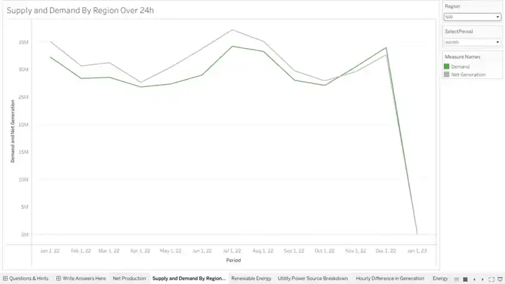
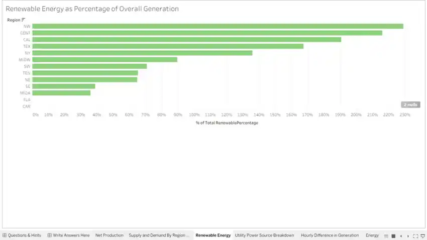
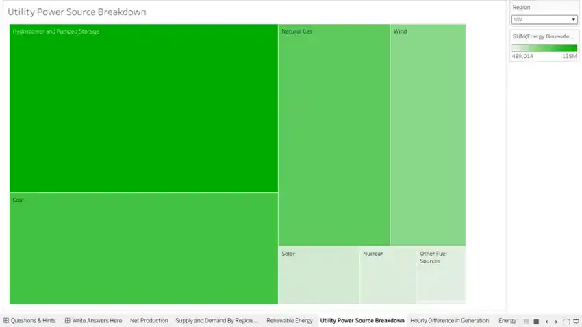
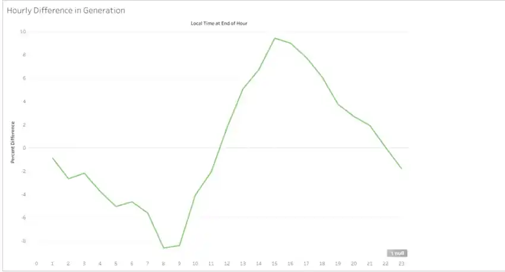
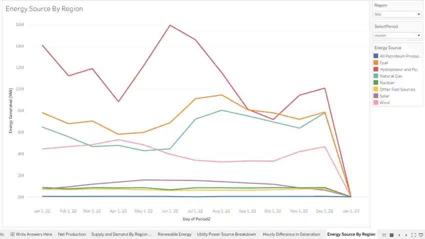

Intel Sustainability
Analysis
A Tableau analysis of U.S. electricity supply, demand, generation stability, and renewable-energy use to evaluate potential regions for a future data center.
Where could energy conditions best support a new data center?
The project, co-designed with Intel’s Sustainability Team, asked which U.S. regions produce an energy surplus, how supply and demand change throughout the day, and which regions rely more heavily on renewable sources. The goal was to turn those patterns into a location recommendation.
Exploring energy availability, stability and generation mix.






The Northwest emerged as a leading region.
My analysis identified the Northwest as a strong candidate based on positive net energy production, its renewable-energy profile, substantial generation capacity, and strong reliance on hydropower. The recommendation combined energy availability with sustainability considerations rather than relying on a single metric.
From a large dataset to a business recommendation.
Tableau · Data visualization · Large-dataset analysis · Energy supply and demand · Renewable-energy analysis · Regional comparison · Sustainability analysis · Business recommendation